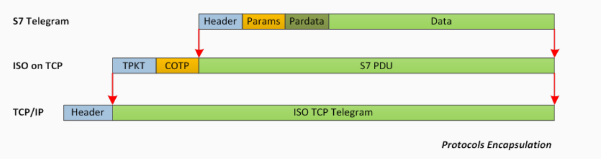
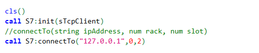
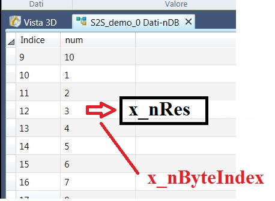
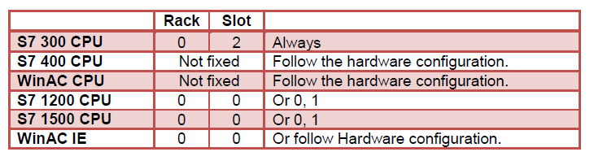
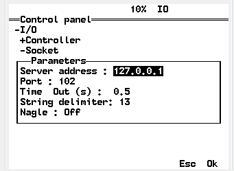
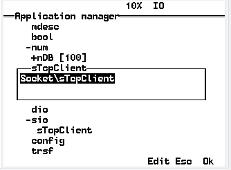
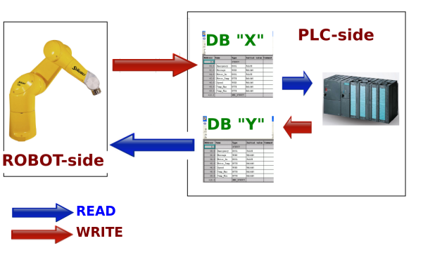
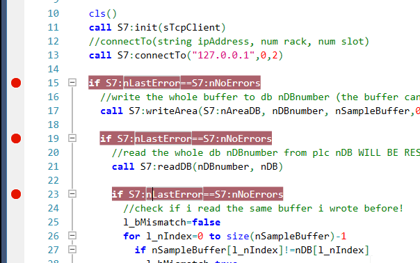

1 What is S2S library?
S2S is a minimal VAL3 porting of the "S7_micro_client" class of the SNAP7 library (Copyright (C) 2013, Davide Nardella, http://snap7.sourceforge.net/).
S2S is an acronym for "Staubli to Siemens" (or "Siemens to Staubli" if you prefer!).
It allows the read/write communication from a Staubli controller to a Siemens PLC over a standard ethernet TCP/IP connection, without the needs of a specific fieldbus.
2 How does it work?
Short story:
Siemens S7 communication between a plc and the rest of the world works by "telegrams" sent, usually, over a fieldbus.
The same telegrams can be incapsulated in TCP/IP packet and sent over a standard Ethernet connection.
The VAL3 language allow to send/receive data over TCP/IP.
...easy eh?

In general, all Siemens plc's with a network board can do this.
If you're interested you can find a better explanation here.
3 Advantages
- No needs of a specific fieldbus to manage the communication between Staubli Controller and a Siemens plc (in few words...you don't need to buy ax expensive profinet/profibus board).
- Flexibility, since you can modify the quantity and type of information exchanged between the roboot and the plc without re-configuring the fieldbus parameters (using weird tools as applicomIO!).
- The possibility to use a Staubli controller as a "bridge" between the plc and some other device connected to the robot's controller (cameras, PC's...)
4 Design Principles
Memory areas on plc's side are "byte addressed", so the easiest way to represent it in a VAL3 application is with an array of "num" where an element is a byte.
So, in this documentation, the terms "array of num" and "array of bytes" are synonyms.
The communication between the robot's controller and the plc is done by reading and writing these arrays of "num".
In these arrays of "num" (actually bytes) are "hidden" the information we want to exchange with the plc (it could be a single bit in the middle of a byte or a double word made by 4 bytes!)
To help the VAL3 programmer in reading/writing information from/to these arrays the S2S library provide a collection of convenient "helper functions".
5 Library Functions
Created venerdì 20 gennaio 2017
In this section you'll find the documentation of the public functions of the library
5.0 startup functions
Created venerdì 20 gennaio 2017
These functions must be called at least once when the VAL3 application is started to initialize the library and establish a connection.
5.0.1 init
Created giovedì 01 dicembre 2016
init(sio& x_sTCPclient)
This function initialize the library.
Use it once at the beginning of your VAL3 application.
Arguments:
- x_sTCPclient: the sio variable linked with the TCP client socket you must define on your controller
Example:

5.0.2 connectTo
connectTo(string x_sIp, num x_nRack, num x_nSlot)
This function establish a connection between the robot's controller and the PLC and negotiate some communicatione parameters with it.
Normally it's enough to use it once at the beginning of you VAL3 application (more than once if in your application you're going to disconnect/reconnect to plc).-
Arguments:
- x_sIp: the PLC's ip address
- x_nRack: rack number of the plc's cpu
- x_nSlot: slot number of the plc's cpu
Example:

5.1 read-write functions
These functions allows the controller to access the PLC memory's areas to write or read data.
They all receive an array of num as argument, this array is the "VAL3 representation" of the memory area we are accessing in the PLC.
5.1.1 readArea
readArea(num x_nIdArea, num x_nDBnumber, num x_nStartAt, num x_nQty, num& x_nBuffer[1])
This function read a memory area from the PLC starting from "x_nStartAt" byte and for a "x_nQty" number of bytes.
The result is stored in a "num" array that will represent the memory area read.
Arguments:
- x_nIdArea: the PLC's memory area identifier (you'll find several identifier as public members of the library with the suffix "nArea").
- x_nDBnumber: the DB number you're reading from (this parameter is not important if you're not reading a db...but in VAL3 there's no possibility to overload functions so we must pass it the same to this function!).
- x_nStartAt:: the byte adddress you want start to read from.
- x_nQty: the amount of bytes you want to read.
- x_nBuffer[1]: a monodimensional array where the area read is stored. If the size of this buffer is smaller than "x_nQty" only "size(x_nBuffer[])" will be read .
Example:

5.1.2 writeArea
writeArea(num x_nIdArea, num x_nDBnumber, num x_nBuffer[1], num x_nStartAt, num x_nQty)
This function write in a given PLC memory's area the content of the passed array of num, starting from a gven byte and for a given amount of bytes.
Arguments:
- x_nIdArea: the PLC's memory area identifier (you'll find several identifier as public members of the library with the suffix "nArea").
- x_nDBnumber: the DB number you're writing to (this parameter is not important if you're not writing a db...but in VAL3 there's no possibility to overload functions so we must pass it the same to this function!).
- x_nBuffer[1]: a monodimensional array where representing the memory area we want to write. If the size of this buffer is smaller than "x_nQty" only "size(x_nBuffer[])" will be written .
- x_nStartAt:: the byte address you want start to write from.
- x_nQty: the amount of bytes you want to write.
Example:

5.1.3 readDB
readDB(num x_nDBnumber, num& x_nDB[1])
This function is a convenient wrapper of "readArea" useful to read a whole DB from the PLC.
Arguments:
- x_nDBnumber: the DB number you want to read
- x_nDB[1]: a monodimensional array of "num" where the db is stored. The size of this buffer will be resized to match exactly the db's size , for this reason x_nDB[] MUST BE A GLOBAL VARIABLE.
Example:

5.1.4 getDBsize
getDBsize(num x_nDBnumber, num& x_nSize)
Writes in the x_nSize argument the size in bytes of the db "x_nDBnumber".
Arguments:
- x_nDBnumber: the DB number you want to know the size.
- x_nSize: the variable where the size of the db will be written.
Example:

5.2 Helper functions
These function help the programmer to handle the array of "num" representing the memory's area of the PLC.
5.2.1 getBitAt
getBitAt(num x_nByteIndex, num x_nBitIndex, num x_nBuffer[1], bool& x_bRes)
This function get the boolean value of the bit number "x_nBitIndex" of the "x_nByteIndex" element (that represent a byte) of the passed array of num.
Arguments:
- x_nByteIndex: the index of the "x_nBuffer[]" array representing the byte we want to read from.
- x_nBitIndex: the bit number from 0(LSB) to 7(MSB) in the x_nByteIndex byte, if this value is lower than 0 or higher than 7 x_bRes will be set to false by default.
- x_nBuffer[1]: the monodimensional array of num from where we are reading the bit value.
- x_bRes: the result, set to "true" if the bit is high, false otherwise.
Example:

5.2.2 getByteAt
getByteAt(num x_nByteIndex, num x_nBuffer[1], num& x_nRes)
This function is trivial, it just return in "x_nRes" the "x_nByteIndex" element of the array x_nBuffer.
Arguments:
- x_nByteIndex: the index of the element in the "x_nBuffer[]" array representing the byte we want to read
- x_nBuffer[1]: the monodimensional array of num from where we are reading a byte.
- x_nRes: where the result is stored
Esempio:

5.2.3 getWordAt
getWordAt(num x_nByteIndex, num x_nBuffer[1], num& x_nRes)
This function return in "x_nRes" the value of the word composed by two bytes starting from "x_nByteIndex" element of the array x_nBuffer.
The first byte is the lower part of the word (Big Endian)
Arguments:
- x_nByteIndex: the index of the element in the "x_nBuffer[]" array representing the starting byte of the word we want to read
- x_nBuffer[1]: the monodimensional array of num from where we are reading a word.
- x_nRes: where the result is stored
Esempio:

5.2.4 getDwordAt
getDwordAt(num x_nByteIndex, num x_nBuffer[1], num& x_nRes)
This function return in "x_nRes" the value of the double word composed by four bytes starting from "x_nByteIndex" element of the array x_nBuffer.
The first byte is the lower part of the word (Big Endian)
Arguments:
- x_nByteIndex: the index of the element in the "x_nBuffer[]" array representing the starting byte of the double word we want to read
- x_nBuffer[1]: the monodimensional array of num from where we are reading a double word.
- x_nRes: where the result is stored
Esempio:
5.2.5 setBitAt
setBitAt(num x_nByteIndex, num x_nBitIndex, bool x_bBit, num& x_nBuffer[1])
This function set to "x_bBit" the boolean value of the bit number "x_nBitIndex" of the "x_nByteIndex" element (that represent a byte) of the passed array of num.
Arguments:
- x_nByteIndex: the index of the "x_nBuffer[]" array representing the byte we want to set.
- x_nBitIndex: the bit number from 0(LSB) to 7(MSB) in the x_nByteIndex byte, if this value is lower than 0 or higher than 7 this function will have no effetcs.
- x_bBit: the boolean value we want to set.
- x_nBuffer[1]: the monodimensional array of num from we are writing the bit value.
5.2.6 setByteAt
setByteAt(num x_nByteIndex, num x_nByte ,num& x_nBuffer[1])
This function is trivial, it just set to "x_nByte" the "x_nByteIndex" element of the array x_nBuffer.
Arguments:
- x_nByteIndex: the index of the element in the "x_nBuffer[]" array representing the byte we want to read.
- x_nRes: the byte value we want to set.
- x_nBuffer[1]: the monodimensional array of num from where we are reading a byte.
5.2.7 setWordAt
SetWordAt(num x_nByteIndex, num x_nWord, num& x_nBuffer[1])
This function set to "x_nWord" the value of the word composed by two bytes starting from "x_nByteIndex" element of the array x_nBuffer.
This will be done according to the Big Endian notation used in Siemens.
Arguments:
- x_nByteIndex: the index of the element in the "x_nBuffer[]" array representing the starting byte of the word we want to read
- x_nBuffer[1]: the monodimensional array of num from where we are reading a word.
- x_nRes: where the result is stored
6 Integration in VAL3 application
S2S library need to be linked to your VAL3 application as any other VAL3 library.
In the SRS cell that you can download from the repository you'll find (in Controller/usr/usrapp) the library and some demo application linked to it (see under "reference").
If you have no idea of what is a SRS cell or how to link a library to your application you should probably contact Staubli support.
6.0 Getting Started
The easiest way to start with S2S is by looking at some simple examples.
In the SRS cell that you can download from the repository you'll find a demo application called "S2S_demo_0".
Upload it to your controller.
Configure it by setting the right ip address, rack and slot in the "connectTo()" function.

Rack and Slot parameters may change depending on the hardware configuration settings in the plc's project.
The following table list default values for different platforms.

Set the db number you want to use to perform the test by changing the value of the variable nDBnumber.
On the plc side, define the db (if you're using S7 1200/1500 have a look here)

Create a socket TCP client on the controller and link it to the sio variable sTcpClient.
The configuration of the socket it's not important, it will be overwritten by the init() and connectTo() functions of the library.

Connect a cable between the controller and the plc (be sure they're both in the same network)
Run the application to perform automatically the following operation:
-connect to a plc (so remember to change the ip address!)
-get the db size of db "nDBnumber"
-write a sample buffer to plc's db "nDBnumber"
-read the whole db
-verify that what i read is the same stuff i wrote
If everything is ok you'll se a succes message...otherwise an error message will appear.


The "S2S_demo_0" code is quite simple and well commented, so it should be easy to learn the basics for your application.
In addition you'll find at least another demo application "S2S_demo_1" where a pick&place application is made by reading/writing from two different db's.
6.1 Best Pratices
In theory the readArea/writeArea functions of this library could work with different areas on the plc's memory (db, timers, inputs, outputs, merkers), but, in my opinion, to manage the communication between a robot's controller and a plc's reading/writing db's is more than enough.
To reduce complexity a good way to work is to define on the plc's side two db's: the first is where the robot writes and the plc reads, in the second the robot read and the plc writes.

Since we're not using a fieldbus we don't have any "dio" or "aio" in our VAL3 application coming from the PLC.
For this reason is a good pratice to "encapsulate" the read/write operation in specific function, as you can see in the "S2S_demo_1" application.
This will improve the efficiency in doing modification to your code and the possibility to manage erros in case of connection's problems!
6.2 Testing Platform
In the Snap7 library folders you can find a very convenient "PLC emulator" you can use to debug your application and made some read/write db tests.
You can find it in the folder \snap7-full-1.4.1\rich-demos\x86_64-win64\bin\serverdemo.exe
In the same folder you also find a "client" demo.

6.3 Errors management
At the moment there's no a big errors managements.
The library itself set a numeric value (nLastError) representig different error conditions.
In case of problems you can eventually check it to help me in debug

Coding your application you can verify, every time you interact with the plc, that everything is ok.
Like this:

7 PLC notes
tested hardware:
At the moment S2S have been tested succesfully with the following hardware:
- CPU 315-2 PN/DP (Siemens)
- IM151-8F PN/DP (Siemens)
- CPU 015PN (VIPA ...but for some reason the getDBsize function is not working on this environment!)
In theory S2S should work with the following hardware:
- S7 300/400/WinAC
- S7 1200/1500 with the followings considerations:
To access a DB in S7 1500 some additional setting plc-side are needed.
- Only global DBs can be accessed.
- The optimized block access must be turned off.
- The access level must be “full” and the “connection mechanism” must allow GET/PUT.
Select the DB in the left pane under “Program blocks” and press Alt-Enter (or in the contextual menu select “Properties…”)
Uncheck Optimized block access, by default it’s checked.

Select the CPU project in the left pane and press Alt-Enter (or in the contextual menu select “Properties…”)
In the item Protection, select “Full access” and Check “Permit access with PUT/GET ….” as in figure.

8 Disclaimer and Licensing
First of all...i'm sorry for my bad english...if you would like to make some improvements in the grammar of this documentation, you're welcome!
Then remember that:
S2S is distributed in the hope that it will be useful, but IS PROVIDED "AS IS", WITHOUT ANY WARRANTY.
THE ENTIRE RISK AS TO THE QUALITY AND PERFORMANCE OF THE PROGRAM IS WITH YOU.
SHOULD THE PROGRAM PROVE DEFECTIVE, YOU ASSUME THE COST OF ALL NECESSARY SERVICING, REPAIR OR CORRECTION.
Since S2S is a derivative work of the Snap7 (released under lgpl v3) this library is also released under lgpl v3.
If you didn't receive the license with the library you can get a copy here.
If you want to know more about the license go here.
In short:
This license is mainly applied to libraries.
You may copy, distribute and modify the software provided that modifications are described and licensed for free under LGPL.
Derivatives works (including modifications or anything statically linked to the library) can only be redistributed under LGPL, but applications that use the library can be licensed as you prefer.
9 Contacts
For any question or request contact me to asvilla83<at>gmail.com